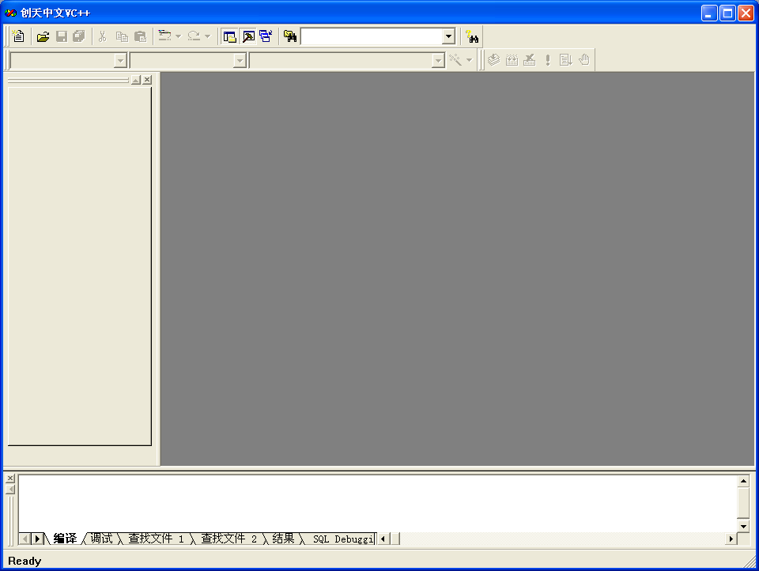
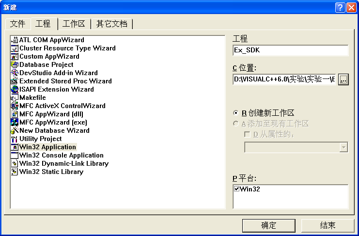
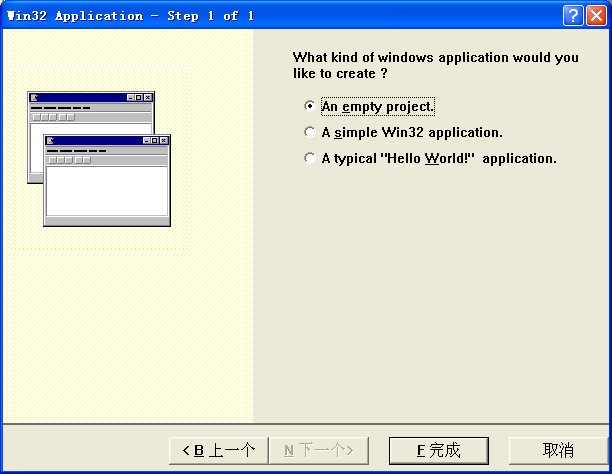
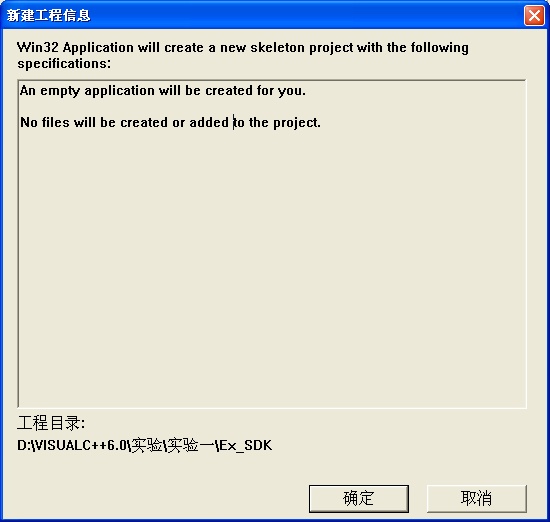
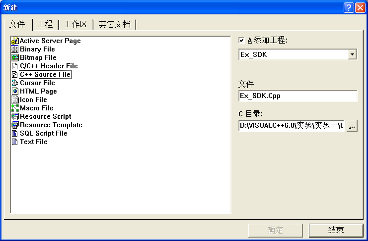
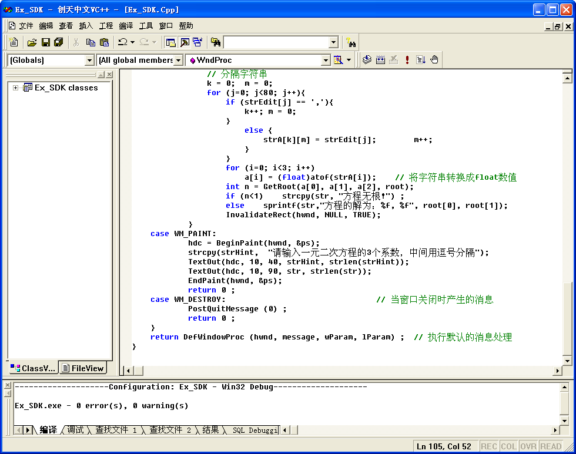
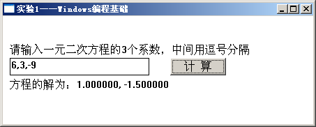
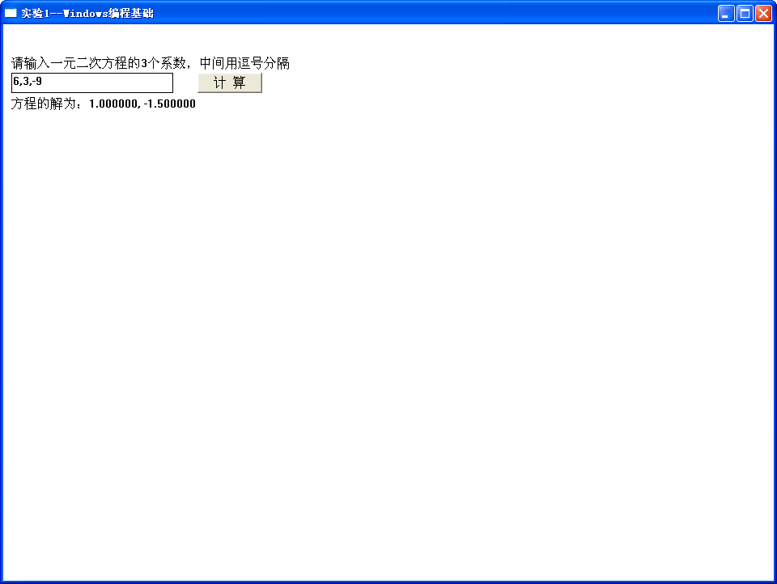

<!DOCTYPE html>


<html lang="zh-CN">


<head>
  <meta charset="utf-8" />
    
  <meta name="description" content="The seeker of the world" />
  
  <meta name="viewport" content="width=device-width, initial-scale=1, maximum-scale=1" />
  <title>
    vc++6.0-Windows编程基础 |  Tianye Blog
  </title>
  <meta name="generator" content="hexo-theme-ayer">
  
  <link rel="shortcut icon" href="/favicon.ico" />
  
  
<link rel="stylesheet" href="/dist/main.css">

  
<link rel="stylesheet" href="/comm/remixicon.min.css">

  
<link rel="stylesheet" href="/css/custom.css">

  
  
<script src="/comm/pace.min.js"></script>

  
  

  
<script>
var _hmt = _hmt || [];
(function() {
	var hm = document.createElement("script");
	hm.src = "https://hm.baidu.com/hm.js?a65f4359920e6c4b5b2b6d0519751045";
	var s = document.getElementsByTagName("script")[0]; 
	s.parentNode.insertBefore(hm, s);
})();
</script>


<link rel="alternate" href="/atom.xml" title="Tianye Blog" type="application/atom+xml">
</head>

</html>

<body>
  <div id="app">
    
      
      <canvas width="1777" height="841"
        style="position: fixed; left: 0px; top: 0px; z-index: 99999; pointer-events: none;"></canvas>
      
    <main class="content on">
      <section class="outer">
  <article
  id="post-vc++6.0-Windows编程基础"
  class="article article-type-post"
  itemscope
  itemprop="blogPost"
  data-scroll-reveal
>
  <div class="article-inner">
    
    <header class="article-header">
       
<h1 class="article-title sea-center" style="border-left:0" itemprop="name">
  vc++6.0-Windows编程基础
</h1>
 

    </header>
     
    <div class="article-meta">
      <a href="/2016/03/vc++6.0-Windows%E7%BC%96%E7%A8%8B%E5%9F%BA%E7%A1%80/" class="article-date">
  <time datetime="2016-03-10T02:56:08.000Z" itemprop="datePublished">2016-03-10</time>
</a> 
  <div class="article-category">
    <a class="article-category-link" href="/categories/vc-6-0/">vc++6.0</a>
  </div>
  
<div class="word_count">
    <span class="post-time">
        <span class="post-meta-item-icon">
            <i class="ri-quill-pen-line"></i>
            <span class="post-meta-item-text"> 字数统计:</span>
            <span class="post-count">1.2k</span>
        </span>
    </span>

    <span class="post-time">
        &nbsp; | &nbsp;
        <span class="post-meta-item-icon">
            <i class="ri-book-open-line"></i>
            <span class="post-meta-item-text"> 阅读时长≈</span>
            <span class="post-count">5 分钟</span>
        </span>
    </span>
</div>
 
    </div>
      
    <div class="tocbot"></div>


  
    <div class="article-entry" itemprop="articleBody">
       
  <p><strong>实验目的：</strong> 创建一个Win32应用程序Ex_SDK，在程序中构造一个编辑框控件和一个按钮。编辑框用于输入一元二次方程的系数，各系数之间用逗号分隔，当单击“计算”按钮，获取方程系数，然后将求得的根通过TextOut显示在窗口客户区中。 <strong>实验仪器：</strong> 电脑一台(CPU：Inter(R) Xeon(R) E3-1230 v3 @ 3.3GHz 内存：8.0GB   操作系统：Win8.1虚拟机xp 使用软件：Vc++ 6.0)</p>
<h5 id="1-．启动Visual-C-6-0"><a href="#1-．启动Visual-C-6-0" class="headerlink" title="1**．启动Visual C++ 6.0**"></a><strong>1**</strong>．<strong>启动</strong>Visual C++ 6.0**</h5><p>打开计算机，启动Visual C++ 6.0系统。 </p>
<p></p>
<h5 id="2-．-创建工程并添加代码"><a href="#2-．-创建工程并添加代码" class="headerlink" title="2**．**创建工程并添加代码"></a><strong>2**</strong>．**创建工程并添加代码</h5><p>① 选择“文件”→“新建”菜单命令，打开应用程序向导，显示出“新建”对话框。单击“工程”标签，从列表框中选中Win32 Application（Win32 应用程序）项。在工程名称框中输入Win32应用程序项目名称Ex_SDK。单击浏览按钮…将工程定位到文件夹 “…\Visual C++ 6.0程序\实验\实验1”。 </p>
<p></p>
<p>② 单击“确定”按钮继续。在向导第一步对话框中，选中An empty project（一个空的工程）项。单击“完成”按钮，系统将显示AppWizard（应用程序向导）的创建信息，单击“确定”按钮，系统将自动创建此应用程序。 </p>
<p></p>
<p></p>
<p>③ 再次选择“文件”→“新建”菜单命令，显示出“新建”对话框。单击“文件”标签，在左边的列表框中选择C++ Source File项，在右边的“文件”下的编辑框中输入Ex_SDK.cpp，单击“确定”按钮。 </p>
<p></p>
<p>④ 在打开的文档窗口中输入下面的代码：</p>
<figure class="highlight cpp"><table><tr><td class="gutter"><pre><span class="line">1</span><br><span class="line">2</span><br><span class="line">3</span><br><span class="line">4</span><br><span class="line">5</span><br></pre></td><td class="code"><pre><span class="line"><span class="meta">#<span class="meta-keyword">include</span> <span class="meta-string">&lt;windows.h&gt;</span></span></span><br><span class="line"></span><br><span class="line"><span class="meta">#<span class="meta-keyword">include</span> <span class="meta-string">&lt;math.h&gt;</span></span></span><br><span class="line"></span><br><span class="line"><span class="meta">#<span class="meta-keyword">include</span> <span class="meta-string">&lt;stdio.h&gt;</span></span></span><br></pre></td></tr></table></figure>
<p>// 求一元二次方程的根，函数返回根的个数</p>
<figure class="highlight cpp"><table><tr><td class="gutter"><pre><span class="line">1</span><br><span class="line">2</span><br><span class="line">3</span><br><span class="line">4</span><br><span class="line">5</span><br><span class="line">6</span><br><span class="line">7</span><br><span class="line">8</span><br><span class="line">9</span><br><span class="line">10</span><br><span class="line">11</span><br><span class="line">12</span><br><span class="line">13</span><br><span class="line">14</span><br><span class="line">15</span><br><span class="line">16</span><br><span class="line">17</span><br><span class="line">18</span><br><span class="line">19</span><br><span class="line">20</span><br><span class="line">21</span><br><span class="line">22</span><br><span class="line">23</span><br><span class="line">24</span><br><span class="line">25</span><br><span class="line">26</span><br><span class="line">27</span><br><span class="line">28</span><br><span class="line">29</span><br><span class="line">30</span><br><span class="line">31</span><br><span class="line">32</span><br><span class="line">33</span><br><span class="line">34</span><br><span class="line">35</span><br><span class="line">36</span><br><span class="line">37</span><br><span class="line">38</span><br><span class="line">39</span><br><span class="line">40</span><br><span class="line">41</span><br><span class="line">42</span><br><span class="line">43</span><br><span class="line">44</span><br><span class="line">45</span><br><span class="line">46</span><br><span class="line">47</span><br><span class="line">48</span><br><span class="line">49</span><br><span class="line">50</span><br><span class="line">51</span><br><span class="line">52</span><br><span class="line">53</span><br><span class="line">54</span><br><span class="line">55</span><br><span class="line">56</span><br><span class="line">57</span><br><span class="line">58</span><br><span class="line">59</span><br><span class="line">60</span><br><span class="line">61</span><br><span class="line">62</span><br><span class="line">63</span><br><span class="line">64</span><br><span class="line">65</span><br><span class="line">66</span><br><span class="line">67</span><br><span class="line">68</span><br><span class="line">69</span><br><span class="line">70</span><br><span class="line">71</span><br><span class="line">72</span><br><span class="line">73</span><br><span class="line">74</span><br><span class="line">75</span><br><span class="line">76</span><br><span class="line">77</span><br><span class="line">78</span><br><span class="line">79</span><br><span class="line">80</span><br><span class="line">81</span><br><span class="line">82</span><br><span class="line">83</span><br><span class="line">84</span><br><span class="line">85</span><br><span class="line">86</span><br><span class="line">87</span><br><span class="line">88</span><br><span class="line">89</span><br><span class="line">90</span><br><span class="line">91</span><br><span class="line">92</span><br><span class="line">93</span><br><span class="line">94</span><br><span class="line">95</span><br><span class="line">96</span><br><span class="line">97</span><br><span class="line">98</span><br><span class="line">99</span><br><span class="line">100</span><br><span class="line">101</span><br><span class="line">102</span><br><span class="line">103</span><br><span class="line">104</span><br><span class="line">105</span><br><span class="line">106</span><br><span class="line">107</span><br><span class="line">108</span><br><span class="line">109</span><br><span class="line">110</span><br><span class="line">111</span><br><span class="line">112</span><br><span class="line">113</span><br><span class="line">114</span><br><span class="line">115</span><br><span class="line">116</span><br><span class="line">117</span><br><span class="line">118</span><br><span class="line">119</span><br><span class="line">120</span><br><span class="line">121</span><br><span class="line">122</span><br><span class="line">123</span><br><span class="line">124</span><br><span class="line">125</span><br><span class="line">126</span><br><span class="line">127</span><br><span class="line">128</span><br><span class="line">129</span><br><span class="line">130</span><br><span class="line">131</span><br><span class="line">132</span><br><span class="line">133</span><br><span class="line">134</span><br><span class="line">135</span><br><span class="line">136</span><br><span class="line">137</span><br><span class="line">138</span><br><span class="line">139</span><br><span class="line">140</span><br><span class="line">141</span><br><span class="line">142</span><br><span class="line">143</span><br><span class="line">144</span><br><span class="line">145</span><br><span class="line">146</span><br><span class="line">147</span><br><span class="line">148</span><br><span class="line">149</span><br><span class="line">150</span><br><span class="line">151</span><br><span class="line">152</span><br><span class="line">153</span><br><span class="line">154</span><br><span class="line">155</span><br><span class="line">156</span><br><span class="line">157</span><br><span class="line">158</span><br><span class="line">159</span><br><span class="line">160</span><br><span class="line">161</span><br><span class="line">162</span><br><span class="line">163</span><br><span class="line">164</span><br><span class="line">165</span><br><span class="line">166</span><br><span class="line">167</span><br><span class="line">168</span><br><span class="line">169</span><br><span class="line">170</span><br><span class="line">171</span><br><span class="line">172</span><br><span class="line">173</span><br><span class="line">174</span><br><span class="line">175</span><br><span class="line">176</span><br><span class="line">177</span><br><span class="line">178</span><br><span class="line">179</span><br><span class="line">180</span><br><span class="line">181</span><br><span class="line">182</span><br><span class="line">183</span><br><span class="line">184</span><br><span class="line">185</span><br><span class="line">186</span><br><span class="line">187</span><br><span class="line">188</span><br><span class="line">189</span><br><span class="line">190</span><br><span class="line">191</span><br><span class="line">192</span><br><span class="line">193</span><br><span class="line">194</span><br><span class="line">195</span><br><span class="line">196</span><br><span class="line">197</span><br><span class="line">198</span><br><span class="line">199</span><br><span class="line">200</span><br><span class="line">201</span><br><span class="line">202</span><br><span class="line">203</span><br><span class="line">204</span><br><span class="line">205</span><br><span class="line">206</span><br><span class="line">207</span><br><span class="line">208</span><br><span class="line">209</span><br><span class="line">210</span><br><span class="line">211</span><br><span class="line">212</span><br><span class="line">213</span><br><span class="line">214</span><br><span class="line">215</span><br></pre></td><td class="code"><pre><span class="line"><span class="function"><span class="keyword">int</span> <span class="title">GetRoot</span><span class="params">(<span class="keyword">float</span> a, <span class="keyword">float</span> b, <span class="keyword">float</span> c, <span class="keyword">double</span> *root)</span></span></span><br><span class="line"><span class="function"></span></span><br><span class="line"><span class="function"></span>&#123;</span><br><span class="line"></span><br><span class="line">         <span class="keyword">double</span> delta, deltasqrt;</span><br><span class="line"></span><br><span class="line">         delta = b\*b - <span class="number">4.0</span> \* a * c;</span><br><span class="line"></span><br><span class="line">         <span class="keyword">if</span> (delta&lt;<span class="number">0.0</span>) <span class="keyword">return</span> <span class="number">0</span>;  <span class="comment">// 无根</span></span><br><span class="line"></span><br><span class="line">         deltasqrt = <span class="built_in">sqrt</span>(delta);</span><br><span class="line"></span><br><span class="line">         <span class="keyword">if</span> (a!=<span class="number">0.0</span>) &#123;</span><br><span class="line"></span><br><span class="line">                   root\[<span class="number">0</span>\] = (-b + deltasqrt)/(<span class="number">2.0</span> * a);</span><br><span class="line"></span><br><span class="line">                   root\[<span class="number">1</span>\] = (-b - deltasqrt)/(<span class="number">2.0</span> * a);</span><br><span class="line"></span><br><span class="line">         &#125; <span class="keyword">else</span></span><br><span class="line"></span><br><span class="line">                   <span class="keyword">if</span> (b!=<span class="number">0.0</span>)          root\[<span class="number">0</span>\] = root\[<span class="number">1</span>\] = -c/b;</span><br><span class="line"></span><br><span class="line">                   <span class="keyword">else</span>   <span class="keyword">return</span> <span class="number">0</span>;</span><br><span class="line"></span><br><span class="line">         <span class="keyword">if</span> (root\[<span class="number">0</span>\] == root\[<span class="number">1</span>\]) <span class="keyword">return</span> <span class="number">1</span>;</span><br><span class="line"></span><br><span class="line">         <span class="keyword">else</span> <span class="keyword">return</span> <span class="number">2</span>;</span><br><span class="line"></span><br><span class="line">&#125;</span><br><span class="line"></span><br><span class="line"><span class="keyword">char</span> str\[<span class="number">80</span>\];</span><br><span class="line"></span><br><span class="line"><span class="function">LRESULT CALLBACK <span class="title">WndProc</span> <span class="params">(HWND, UINT, WPARAM, LPARAM)</span></span>;                  <span class="comment">// 窗口过程</span></span><br><span class="line"></span><br><span class="line"><span class="function"><span class="keyword">int</span> WINAPI <span class="title">WinMain</span> <span class="params">(HINSTANCE hInstance, HINSTANCE hPrevInstance,</span></span></span><br><span class="line"><span class="function"><span class="params"></span></span></span><br><span class="line"><span class="function"><span class="params">                    LPSTR lpCmdLine, <span class="keyword">int</span> nCmdShow)</span></span></span><br><span class="line"><span class="function"></span></span><br><span class="line"><span class="function"></span>&#123;</span><br><span class="line"></span><br><span class="line">     HWND       hwnd ;        <span class="comment">// 窗口句柄</span></span><br><span class="line"></span><br><span class="line">     MSG           msg ;          <span class="comment">// 消息</span></span><br><span class="line"></span><br><span class="line">     WNDCLASS     wndclass ;  <span class="comment">// 窗口类</span></span><br><span class="line"></span><br><span class="line">     wndclass.style                              = CS\_HREDRAW | CS\_VREDRAW ;   </span><br><span class="line"></span><br><span class="line">     wndclass.lpfnWndProc      = WndProc ;                                            </span><br><span class="line"></span><br><span class="line">     wndclass.cbClsExtra         = <span class="number">0</span> ;</span><br><span class="line"></span><br><span class="line">     wndclass.cbWndExtra      = <span class="number">0</span> ;</span><br><span class="line"></span><br><span class="line">     wndclass.hInstance          = hInstance ;</span><br><span class="line"></span><br><span class="line">     wndclass.hIcon            = LoadIcon (<span class="literal">NULL</span>, IDI_APPLICATION) ;</span><br><span class="line"></span><br><span class="line">     wndclass.hCursor          = LoadCursor (<span class="literal">NULL</span>, IDC_ARROW) ;</span><br><span class="line"></span><br><span class="line">     wndclass.hbrBackground    = (HBRUSH) GetStockObject (WHITE_BRUSH) ;</span><br><span class="line"></span><br><span class="line">     wndclass.lpszMenuName  = <span class="literal">NULL</span> ;</span><br><span class="line"></span><br><span class="line">     wndclass.lpszClassName     = <span class="string">"SDKWin"</span>;                                  <span class="comment">// 窗口类名</span></span><br><span class="line"></span><br><span class="line">     <span class="keyword">if</span> (!RegisterClass (&amp;wndclass))                                                    <span class="comment">// 注册窗口</span></span><br><span class="line"></span><br><span class="line">     &#123;</span><br><span class="line"></span><br><span class="line">          MessageBox (<span class="literal">NULL</span>, <span class="string">"窗口注册失败！"</span>, <span class="string">"HelloWin"</span>, <span class="number">0</span>) ;     <span class="keyword">return</span> <span class="number">0</span> ;</span><br><span class="line"></span><br><span class="line">     &#125;</span><br><span class="line"></span><br><span class="line">     <span class="comment">// 创建窗口</span></span><br><span class="line"></span><br><span class="line">     hwnd = CreateWindow (<span class="string">"SDKWin"</span>,                          <span class="comment">// 窗口类名</span></span><br><span class="line"></span><br><span class="line">                          <span class="string">"实验1——Windows编程基础"</span>,      <span class="comment">// 窗口标题</span></span><br><span class="line"></span><br><span class="line">                          WS_OVERLAPPEDWINDOW,             <span class="comment">// 窗口样式</span></span><br><span class="line"></span><br><span class="line">                          CW_USEDEFAULT,              <span class="comment">// 窗口最初的 x 位置</span></span><br><span class="line"></span><br><span class="line">                          CW_USEDEFAULT,                      <span class="comment">// 窗口最初的 y 位置</span></span><br><span class="line"></span><br><span class="line">                          CW_USEDEFAULT,                      <span class="comment">// 窗口最初的 x 大小</span></span><br><span class="line"></span><br><span class="line">                          CW_USEDEFAULT,                    <span class="comment">// 窗口最初的 y 大小</span></span><br><span class="line"></span><br><span class="line"><span class="literal">NULL</span>,                               <span class="comment">// 父窗口句柄</span></span><br><span class="line"></span><br><span class="line">                          <span class="literal">NULL</span>,                         <span class="comment">// 窗口菜单句柄</span></span><br><span class="line"></span><br><span class="line">                          hInstance,                          <span class="comment">// 应用程序实例句柄</span></span><br><span class="line"></span><br><span class="line">                          <span class="literal">NULL</span>) ;                         <span class="comment">// 创建窗口的参数</span></span><br><span class="line"></span><br><span class="line">     ShowWindow (hwnd, nCmdShow) ;                                            <span class="comment">// 显示窗口                                   </span></span><br><span class="line"></span><br><span class="line">     UpdateWindow (hwnd) ;                                                               <span class="comment">// 更新窗口，包括窗口的客户区</span></span><br><span class="line"></span><br><span class="line">     <span class="keyword">while</span> (GetMessage (&amp;msg, <span class="literal">NULL</span>, <span class="number">0</span>, <span class="number">0</span>))   &#123;</span><br><span class="line"></span><br><span class="line">                          TranslateMessage (&amp;msg) ;            <span class="comment">// 转换某些键盘消息</span></span><br><span class="line"></span><br><span class="line">         DispatchMessage (&amp;msg) ;                      <span class="comment">// 将消息发送给窗口过程，这里是WndProc</span></span><br><span class="line"></span><br><span class="line">     &#125;</span><br><span class="line"></span><br><span class="line">     <span class="keyword">return</span> msg.wParam ;</span><br><span class="line"></span><br><span class="line">&#125;</span><br><span class="line"></span><br><span class="line"><span class="function">LRESULT CALLBACK <span class="title">WndProc</span> <span class="params">(HWND hwnd, UINT message, WPARAM wParam, LPARAM lParam)</span></span></span><br><span class="line"><span class="function"></span></span><br><span class="line"><span class="function"></span>&#123;</span><br><span class="line"></span><br><span class="line">         HDC                   hdc;</span><br><span class="line"></span><br><span class="line">         PAINTSTRUCT ps;</span><br><span class="line"></span><br><span class="line">         <span class="keyword">static</span> HWND      hwndButton, hwndEdit;</span><br><span class="line"></span><br><span class="line">         <span class="keyword">char</span>                               strEdit\[<span class="number">80</span>\], strA\[<span class="number">3</span>\]\[<span class="number">80</span>\], strHint\[<span class="number">80</span>\];</span><br><span class="line"></span><br><span class="line">         <span class="keyword">float</span>                     a\[<span class="number">3</span>\];</span><br><span class="line"></span><br><span class="line">         <span class="keyword">double</span>                           root\[<span class="number">2</span>\];</span><br><span class="line"></span><br><span class="line">         <span class="keyword">int</span>                                 i, j, k, m;</span><br><span class="line"></span><br><span class="line">         <span class="keyword">switch</span> (message)</span><br><span class="line"></span><br><span class="line">         &#123;</span><br><span class="line"></span><br><span class="line">         <span class="keyword">case</span> WM_CREATE:                                 <span class="comment">// 窗口创建产生的消息</span></span><br><span class="line"></span><br><span class="line">                            hwndEdit = CreateWindow(<span class="string">"edit"</span>, <span class="literal">NULL</span>, WS\_CHILD|WS\_VISIBLE|WS_ BORDER,</span><br><span class="line">                                                                           <span class="number">10</span>, <span class="number">60</span>, <span class="number">200</span>, <span class="number">25</span>, hwnd, <span class="literal">NULL</span>, <span class="literal">NULL</span>, <span class="literal">NULL</span> );</span><br><span class="line"></span><br><span class="line">                            hwndButton = CreateWindow(<span class="string">"button"</span>, <span class="string">"计  算"</span>,</span><br><span class="line"></span><br><span class="line">                                                                 WS\_CHILD|WS\_VISIBLE|BS_PUSHBUTTON,</span><br><span class="line"></span><br><span class="line">                                                                 <span class="number">240</span>, <span class="number">60</span>, <span class="number">80</span>, <span class="number">25</span>, hwnd, <span class="literal">NULL</span>, <span class="literal">NULL</span>, <span class="literal">NULL</span> );</span><br><span class="line"></span><br><span class="line">                            <span class="keyword">return</span> <span class="number">0</span> ;</span><br><span class="line"></span><br><span class="line">         <span class="keyword">case</span> WM_COMMAND:       <span class="comment">// 命令消息，控件产生的通知代码在wParam的高字中</span></span><br><span class="line"></span><br><span class="line">                            <span class="keyword">if</span> (((HWND)lParam == hwndButton )&amp;&amp;( HIWORD(wParam) == BN_CLICKED ))&#123;</span><br><span class="line">                                                <span class="comment">// 获取编辑框控件的内容,并将其转换成float数值</span></span><br><span class="line"></span><br><span class="line">                                     GetWindowText( hwndEdit, strEdit, <span class="number">80</span>);        <span class="comment">// 获取编辑框内容</span></span><br><span class="line"></span><br><span class="line">                                     <span class="comment">// 分隔字符串</span></span><br><span class="line"></span><br><span class="line">                                     k = <span class="number">0</span>;         m = <span class="number">0</span>;</span><br><span class="line"></span><br><span class="line">                                     <span class="keyword">for</span> (j=<span class="number">0</span>; j&lt;<span class="number">80</span>; j++)&#123;</span><br><span class="line"></span><br><span class="line">                                               <span class="keyword">if</span> (strEdit\[j\] == <span class="string">','</span>)&#123;</span><br><span class="line"></span><br><span class="line">                                                        k++; m = <span class="number">0</span>;</span><br><span class="line"></span><br><span class="line">                                               &#125;</span><br><span class="line"></span><br><span class="line">                                                        <span class="keyword">else</span> &#123;</span><br><span class="line"></span><br><span class="line">                                                                 strA\[k\]\[m\] = strEdit\[j\];          m++;</span><br><span class="line"></span><br><span class="line">                                                        &#125;</span><br><span class="line"></span><br><span class="line">                                               &#125;</span><br><span class="line"></span><br><span class="line">                                               <span class="keyword">for</span> (i=<span class="number">0</span>; i&lt;<span class="number">3</span>; i++)</span><br><span class="line"></span><br><span class="line">                                                        a\[i\] = (<span class="keyword">float</span>)atof(strA\[i\]);       <span class="comment">// 将字符串转换成float数值</span></span><br><span class="line"></span><br><span class="line">                                               <span class="keyword">int</span> n = GetRoot(a\[<span class="number">0</span>\], a\[<span class="number">1</span>\], a\[<span class="number">2</span>\], root);</span><br><span class="line"></span><br><span class="line">                                               <span class="keyword">if</span> (n&lt;<span class="number">1</span>)      <span class="built_in">strcpy</span>(str, <span class="string">"方程无根!"</span>) ;</span><br><span class="line"></span><br><span class="line">                                               <span class="keyword">else</span> <span class="built_in">sprintf</span>(str,<span class="string">"方程的解为：%f, %f"</span>, root\[<span class="number">0</span>\], root\[<span class="number">1</span>\]);</span><br><span class="line"></span><br><span class="line">                                               InvalidateRect(hwnd, <span class="literal">NULL</span>, TRUE);</span><br><span class="line"></span><br><span class="line">                            &#125;</span><br><span class="line"></span><br><span class="line"><span class="keyword">case</span> WM_PAINT:</span><br><span class="line"></span><br><span class="line">                            hdc = BeginPaint(hwnd, &amp;ps);</span><br><span class="line"></span><br><span class="line">                            <span class="built_in">strcpy</span>(strHint,  <span class="string">"请输入一元二次方程的3个系数，中间用逗号分隔"</span>);</span><br><span class="line"></span><br><span class="line">                            TextOut(hdc, <span class="number">10</span>, <span class="number">40</span>, strHint, <span class="built_in">strlen</span>(strHint));</span><br><span class="line"></span><br><span class="line">                            TextOut(hdc, <span class="number">10</span>, <span class="number">90</span>, str, <span class="built_in">strlen</span>(str));</span><br><span class="line"></span><br><span class="line">                            EndPaint(hwnd, &amp;ps);</span><br><span class="line"></span><br><span class="line">                            <span class="keyword">return</span> <span class="number">0</span> ;         </span><br><span class="line"></span><br><span class="line">         <span class="keyword">case</span> WM_DESTROY:                                                                  <span class="comment">// 当窗口关闭时产生的消息</span></span><br><span class="line"></span><br><span class="line">                            PostQuitMessage (<span class="number">0</span>) ;</span><br><span class="line"></span><br><span class="line">                            <span class="keyword">return</span> <span class="number">0</span> ;</span><br><span class="line"></span><br><span class="line">         &#125;</span><br><span class="line"></span><br><span class="line">         <span class="keyword">return</span> DefWindowProc (hwnd, message, wParam, lParam) ;       <span class="comment">// 执行默认的消息处理</span></span><br><span class="line"></span><br><span class="line">&#125;</span><br></pre></td></tr></table></figure>

<p></p>
<p><strong>3**</strong>．**运行并测试</p>
<p>编译并运行程序，在编辑框中填入一元二次方程的系数6、3、-9后，单击“计算”按钮，求解的结果就会显示出来，如图1.1所示。 </p>
<p></p>
<p>图1.1  Ex_SDK运行结果</p>
<p><strong>4．</strong>写出实验报告 </p>
<p></p>
<p><strong>实验结果分析</strong> 初步认识了VC++6.0的编译环境，了解编译界面，同时在选择建立代码环境时方式要选对，并且检查错误代码。</p>
 
      <!-- reward -->
      
    </div>
    

    <!-- copyright -->
    
    <div class="declare">
      <ul class="post-copyright">
        <li>
          <i class="ri-copyright-line"></i>
          <strong>版权声明： </strong>
          本博客所有文章，未经许可，任何单位及个人不得做营利性使用！如有侵权请联系作者。
        </li>
      </ul>
    </div>
    
    <footer class="article-footer">
       
  <ul class="article-tag-list" itemprop="keywords"><li class="article-tag-list-item"><a class="article-tag-list-link" href="/tags/vc-6-0/" rel="tag">vc++6.0</a></li></ul>

    </footer>
  </div>

   
  <nav class="article-nav">
    
      <a href="/2016/03/vc++6.0-%E5%B8%B8%E7%94%A8%E6%8E%A7%E4%BB%B61/" class="article-nav-link">
        <strong class="article-nav-caption">上一篇</strong>
        <div class="article-nav-title">
          
            vc++6.0-常用控件1
          
        </div>
      </a>
    
    
      <a href="/2016/03/vc++-%E6%89%93%E5%8D%B0%E5%8F%8A%E6%89%93%E5%8D%B0%E9%A2%84%E8%A7%88%E5%8A%9F%E8%83%BD%E7%9A%84%E5%AE%9E%E7%8E%B0/" class="article-nav-link">
        <strong class="article-nav-caption">下一篇</strong>
        <div class="article-nav-title">vc++-打印及打印预览功能的实现</div>
      </a>
    
  </nav>

  
     
</article>

</section>
      <footer class="footer">
  <div class="outer">
    <ul>
      <li>
        Copyrights &copy;
        2015-2020
        <i class="ri-heart-fill heart_icon"></i> Tianye Zhai
      </li>
    </ul>
    <ul>
      <li>
        
      </li>
    </ul>
    <ul>
      <li>
        
      </li>
    </ul>
    <ul>
      
    </ul>
    <ul>
      <li>
        <!-- cnzz统计 -->
        
      </li>
    </ul>
  </div>
</footer>
      <div class="float_btns">
        <div class="totop" id="totop">
  <i class="ri-arrow-up-line"></i>
</div>

<div class="todark" id="todark">
  <i class="ri-moon-line"></i>
</div>

      </div>
    </main>
    <aside class="sidebar on">
      <button class="navbar-toggle"></button>
<nav class="navbar">
  
  <div class="logo">
    <a href="/"></a>
  </div>
  
  <ul class="nav nav-main">
    
    <li class="nav-item">
      <a class="nav-item-link" href="/">主页</a>
    </li>
    
    <li class="nav-item">
      <a class="nav-item-link" href="/archives">归档</a>
    </li>
    
    <li class="nav-item">
      <a class="nav-item-link" href="/categories">分类</a>
    </li>
    
    <li class="nav-item">
      <a class="nav-item-link" href="/tags">标签</a>
    </li>
    
    <li class="nav-item">
      <a class="nav-item-link" href="/about">关于</a>
    </li>
    
  </ul>
</nav>
<nav class="navbar navbar-bottom">
  <ul class="nav">
    <li class="nav-item">
      
      <a class="nav-item-link nav-item-search"  title="搜索">
        <i class="ri-search-line"></i>
      </a>
      
      
      <a class="nav-item-link" target="_blank" href="/atom.xml" title="RSS Feed">
        <i class="ri-rss-line"></i>
      </a>
      
    </li>
  </ul>
</nav>
<div class="search-form-wrap">
  <div class="local-search local-search-plugin">
  <input type="search" id="local-search-input" class="local-search-input" placeholder="Search...">
  <div id="local-search-result" class="local-search-result"></div>
</div>
</div>
    </aside>
    <script>
      if (window.matchMedia("(max-width: 768px)").matches) {
        document.querySelector('.content').classList.remove('on');
        document.querySelector('.sidebar').classList.remove('on');
      }
    </script>
    <div id="mask"></div>

<!-- #reward -->
<div id="reward">
  <span class="close"><i class="ri-close-line"></i></span>
  <p class="reward-p"><i class="ri-cup-line"></i>请我喝杯咖啡吧~</p>
  <div class="reward-box">
    
    
  </div>
</div>
    
<script src="/js/jquery-2.0.3.min.js"></script>


<script src="/js/lazyload.min.js"></script>


<!-- Tocbot -->


<script src="/js/tocbot.min.js"></script>

<script>
  
  if(document.getElementsByClassName("tocbot").length !== 0){
    tocbot.init({
      tocSelector: '.tocbot',
      contentSelector: '.article-entry',
      headingSelector: 'h1, h2, h3, h4, h5, h6',
      hasInnerContainers: true,
      scrollSmooth: true,
      scrollContainer: 'main',
      positionFixedSelector: '.tocbot',
      positionFixedClass: 'is-position-fixed',
      fixedSidebarOffset: 'auto'
    });
  }
</script>

<script src="/comm/jquery.modal.min.js"></script>
<link rel="stylesheet" href="/comm/jquery.modal.min.css">
<script src="/comm/jquery.justifiedGallery.min.js"></script>

<script src="/dist/main.js"></script>

<!-- ImageViewer -->

<!-- Root element of PhotoSwipe. Must have class pswp. -->
<div class="pswp" tabindex="-1" role="dialog" aria-hidden="true">

    <!-- Background of PhotoSwipe. 
         It's a separate element as animating opacity is faster than rgba(). -->
    <div class="pswp__bg"></div>

    <!-- Slides wrapper with overflow:hidden. -->
    <div class="pswp__scroll-wrap">

        <!-- Container that holds slides. 
            PhotoSwipe keeps only 3 of them in the DOM to save memory.
            Don't modify these 3 pswp__item elements, data is added later on. -->
        <div class="pswp__container">
            <div class="pswp__item"></div>
            <div class="pswp__item"></div>
            <div class="pswp__item"></div>
        </div>

        <!-- Default (PhotoSwipeUI_Default) interface on top of sliding area. Can be changed. -->
        <div class="pswp__ui pswp__ui--hidden">

            <div class="pswp__top-bar">

                <!--  Controls are self-explanatory. Order can be changed. -->

                <div class="pswp__counter"></div>

                <button class="pswp__button pswp__button--close" title="Close (Esc)"></button>

                <button class="pswp__button pswp__button--share" style="display:none" title="Share"></button>

                <button class="pswp__button pswp__button--fs" title="Toggle fullscreen"></button>

                <button class="pswp__button pswp__button--zoom" title="Zoom in/out"></button>

                <!-- Preloader demo http://codepen.io/dimsemenov/pen/yyBWoR -->
                <!-- element will get class pswp__preloader--active when preloader is running -->
                <div class="pswp__preloader">
                    <div class="pswp__preloader__icn">
                        <div class="pswp__preloader__cut">
                            <div class="pswp__preloader__donut"></div>
                        </div>
                    </div>
                </div>
            </div>

            <div class="pswp__share-modal pswp__share-modal--hidden pswp__single-tap">
                <div class="pswp__share-tooltip"></div>
            </div>

            <button class="pswp__button pswp__button--arrow--left" title="Previous (arrow left)">
            </button>

            <button class="pswp__button pswp__button--arrow--right" title="Next (arrow right)">
            </button>

            <div class="pswp__caption">
                <div class="pswp__caption__center"></div>
            </div>

        </div>

    </div>

</div>

<link rel="stylesheet" href="/comm/photoswipe_dist/photoswipe.css">
<link rel="stylesheet" href="/comm/photoswipe_dist/default-skin/default-skin.css">
<script src="/comm/photoswipe_dist/photoswipe.min.js"></script>
<script src="/comm/photoswipe_dist/photoswipe-ui-default.min.js"></script>

<script>
    function viewer_init() {
        let pswpElement = document.querySelectorAll('.pswp')[0];
        let $imgArr = document.querySelectorAll(('.article-entry img:not(.reward-img)'))

        $imgArr.forEach(($em, i) => {
            $em.onclick = () => {
                // slider展开状态
                // todo: 这样不好，后面改成状态
                if (document.querySelector('.left-col.show')) return
                let items = []
                $imgArr.forEach(($em2, i2) => {
                    let img = $em2.getAttribute('data-idx', i2)
                    let src = $em2.getAttribute('data-target') || $em2.getAttribute('src')
                    let title = $em2.getAttribute('alt')
                    // 获得原图尺寸
                    const image = new Image()
                    image.src = src
                    items.push({
                        src: src,
                        w: image.width || $em2.width,
                        h: image.height || $em2.height,
                        title: title
                    })
                })
                var gallery = new PhotoSwipe(pswpElement, PhotoSwipeUI_Default, items, {
                    index: parseInt(i)
                });
                gallery.init()
            }
        })
    }
    viewer_init()
</script>

<!-- MathJax -->

<!-- Katex -->

<!-- busuanzi  -->

<!-- ClickLove -->

<!-- ClickBoom1 -->

<!-- ClickBoom2 -->


<script src="/js/clickBoom2.js"></script>


<!-- CodeCopy -->


<link rel="stylesheet" href="/css/clipboard.css">

<script src="/comm/clipboard.min.js"></script>
<script>
  function wait(callback, seconds) {
    var timelag = null;
    timelag = window.setTimeout(callback, seconds);
  }
  !function (e, t, a) {
    var initCopyCode = function(){
      var copyHtml = '';
      copyHtml += '<button class="btn-copy" data-clipboard-snippet="">';
      copyHtml += '<i class="ri-file-copy-2-line"></i><span>COPY</span>';
      copyHtml += '</button>';
      $(".highlight .code pre").before(copyHtml);
      $(".article pre code").before(copyHtml);
      var clipboard = new ClipboardJS('.btn-copy', {
        target: function(trigger) {
          return trigger.nextElementSibling;
        }
      });
      clipboard.on('success', function(e) {
        let $btn = $(e.trigger);
        $btn.addClass('copied');
        let $icon = $($btn.find('i'));
        $icon.removeClass('ri-file-copy-2-line');
        $icon.addClass('ri-checkbox-circle-line');
        let $span = $($btn.find('span'));
        $span[0].innerText = 'COPIED';
        
        wait(function () { // 等待两秒钟后恢复
          $icon.removeClass('ri-checkbox-circle-line');
          $icon.addClass('ri-file-copy-2-line');
          $span[0].innerText = 'COPY';
        }, 2000);
      });
      clipboard.on('error', function(e) {
        e.clearSelection();
        let $btn = $(e.trigger);
        $btn.addClass('copy-failed');
        let $icon = $($btn.find('i'));
        $icon.removeClass('ri-file-copy-2-line');
        $icon.addClass('ri-time-line');
        let $span = $($btn.find('span'));
        $span[0].innerText = 'COPY FAILED';
        
        wait(function () { // 等待两秒钟后恢复
          $icon.removeClass('ri-time-line');
          $icon.addClass('ri-file-copy-2-line');
          $span[0].innerText = 'COPY';
        }, 2000);
      });
    }
    initCopyCode();
  }(window, document);
</script>


<!-- CanvasBackground -->


    
  </div>
</body>

</html>